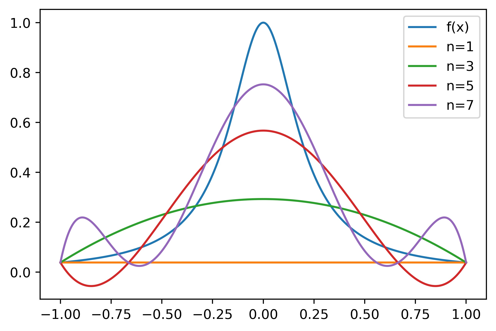

5.1 Weierstrass Theorem¶
To approximate any continuous function, a very simple idea is to approximate the function in a polynomial space. An important property of this space is that polynomials can approximate any reasonable function!
\(P_n(\mathbb{R}^d)\) is dense in \(C(\Omega)\) [Weierstrass theorem]
\(P_n(\mathbb{R}^d)\) is dense in all Sobolev spaces: \(L^2(\Omega), W^{m,p}(\Omega), \ldots\)
Theorem 2
Let \(\Omega\subset R^n\) be a closed and bounded set. Given any continuous function \(f(x)\) on \(\Omega\), there exists a sequence of polynomials \(\{p_n(x)\}\) such that $\(\displaystyle \lim_{n\rightarrow \infty} \max_{x\in \Omega}|f(x)-p_n(x)|=0\)$
Proof. Proof. Let us first give the proof for \(d=1\) and \(\Omega=[0,1]\). Given \(f:[0,1]\rightarrow R\) be a continuous function.
Let
where \(l(x)=f(0)+x(f(1)-f(0))\). Then \(\tilde f(0)=\tilde f(1)=0\). Noting that \(l(x)\) is a linear function, hence without lose of generality, we can only consider the case \(f:[0,1]\rightarrow R\) with \(f(0)=f(1)=0\). Since \(f\) is continuous on the closed interval \([0,1]\), then \(f\) is uniformly continuous on \([0,1]\).
First we extend \(f\) to be zero outside of \([0,1]\) and obtain \(f: R\rightarrow R\), then it is obviously that \(f\) is still uniformly continuous.
Next for \(0\le x\le 1\), we construct
where \(Q_n(x)=c_n(1-x^2)^n\) and
Thus \(\{p_n(x)\}\) is a sequence of polynomials.
Since
Combing with \(\int_{-1}^1 Q_n(x) dx=1\), we obtain \(c_n< n\) implying that for any \(\delta>0\)
so that \(Q_n\rightarrow 0\) uniformly in \(\delta\le |x|\le 1\) as \(n\rightarrow \infty\).
Given any \(\epsilon >0\), since \(f\) in uniformly continuous, there exists \(\delta>0\) such that for any \(|y-x|<\delta\), we have
Finally, let \(M=\max |f(x)|\), using (20) , (18) , (19) , we have
for all large enough \(n\), which proves the theorem.
The above proof generalize the high dimensional case easily. We consider the case that
By extension and using cut off function, W.L.O.G. that we assume that \(f=0\) on the boundary of \(\Omega\) and we then extending this function to be zero outside of \(\Omega\).
Let us consider the special polynomial functions
Similar proof can then be applied. ◻
5.1.1 Curse of dimensionality¶
Number of coefficients for polynomial space \(P_n(\mathbb{R}^d)\) is $\(N = \binom{d+n}{n} = \frac{(n+d)!}{d!n!}.\)\( For example \)n = 100$:
\(d =\) \(2\) \(4\) \(8\)
\(N=\) \(5\times10^3\) \(4.6\times10^6\) \(3.5\times10^{11}\)
As the this table shows, the dimension of the polynomial space \(P_n(\mathbb{R}^d)\) increases rapidly as the degree \(n\) increases. This leads to an extremely large space therefore very expensive to approximate functions in polynomial spaces in high dimensions.
5.1.2 Runge’s phenomenon¶
A natural way to approximate a given function on any interval \([a,b]\) is to use an \(n\)-degree polynomial \(p_n(x)\) by \(n+1\) equispaced points, namely
By Weierstrass’ theorem, we expect a more accurate reconstruction of \(f(x)\) by using more points. But this is not always true as shown in the following example.
Consider the Runge function (a scaled version of the Witch of Agnesi)
Runge found that if this function is interpolated at equidistant points \(x_i\) between \(-1\) and \(1\) such that:
with a polynomial \(p_n(x)\) of degree \(\leq n\), the resulting interpolation oscillates toward the ends of the interval, i.e. close to \(-1\) and \(1\). It can even be proven that the interpolation error increases (without bound) when the degree of the polynomial is increased:
This shows that high-degree polynomial interpolation at equidistant points can be troublesome.

The experiment shows that the polynomials \(p_n(x)\) produced in this manner may in fact diverge away from \(f(x)\) as \(n\) increases. This typically occurs in an oscillating pattern that magnifies near the ends of the interpolation points. This phenomenon is attributed to Runge.
Thus, this particular set of polynomial functions \(p_n(x)\) is not guaranteed to have the property of uniform convergence. In other words, Weierstrass’ theorem guarantees the existence of the polynomial functions, but how to find such polynomials is not provided.